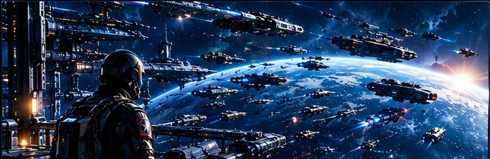
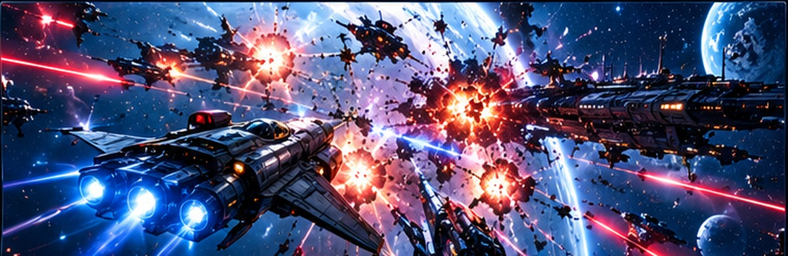
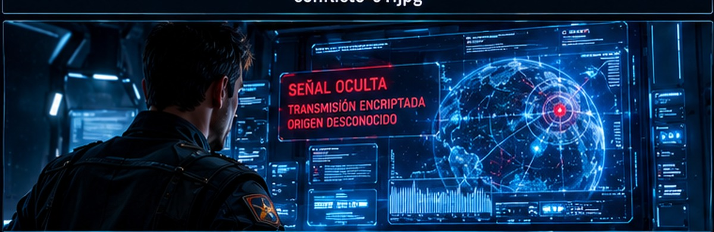
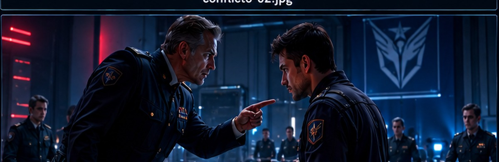
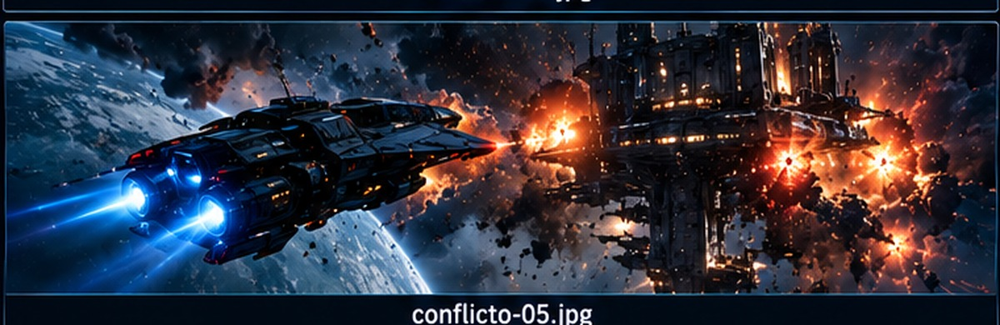
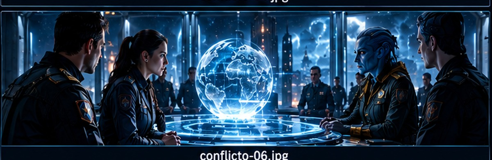
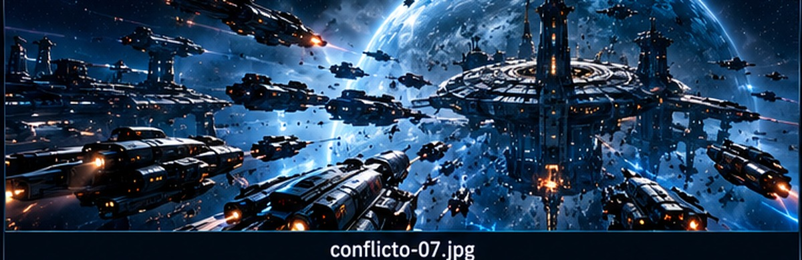
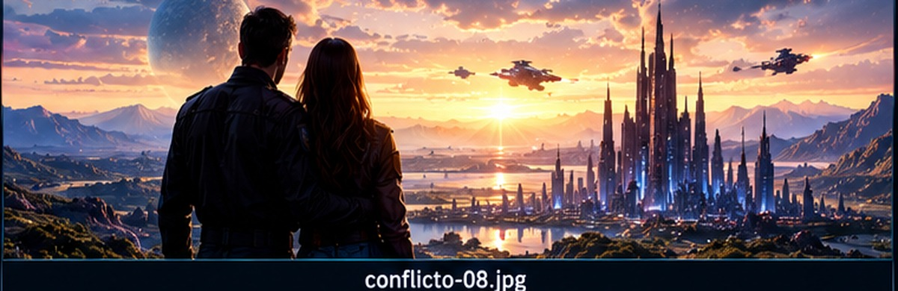

El comienzo de la guerra
Año 2479. La humanidad ha conquistado las estrellas, pero sus avances no han traído la paz. Dos grandes civilizaciones luchan por controlar la energía que mantiene vivos sus planetas.
En medio de la guerra, el comandante Adrián Vega descubre que el enemigo podría no ser quien todos creen. Una conspiración amenaza con destruir ambos mundos.
«A veces, la batalla más peligrosa no se libra contra el enemigo, sino contra la verdad».

01. La amenaza
Las alarmas sacudieron la estación orbital. En las pantallas aparecieron cientos de naves acercándose a la frontera humana. Adrián Vega recibió una orden directa: defender el planeta a cualquier precio. Sabía que millones de vidas estaban en peligro.
«La guerra había comenzado antes de que alguien tuviera tiempo de detenerla».

02. Fuego en las estrellas
El espacio se iluminó con explosiones. Las naves se cruzaban a velocidades imposibles mientras los pilotos intentaban sobrevivir. Adrián dirigió a su escuadrón entre los disparos. Vio caer a sus compañeros y comprendió que aquella batalla era diferente.
«En el vacío del espacio, cada segundo podía ser el último».

03. La señal oculta
Después del combate, Adrián detectó una transmisión escondida en los sistemas enemigos. No era una orden de ataque: era una petición de ayuda. Ambos bandos recibían órdenes de una misma fuente desconocida. Alguien alimentaba la guerra desde las sombras.
«¿Y si el verdadero enemigo estaba sentado en nuestra propia mesa?»

04. La traición
Adrián llevó las pruebas al alto mando. Esperaba respuestas, pero encontró silencio y soldados apuntándole. Su propio superior había ordenado ocultar la señal. La guerra mantenía el poder de unos pocos mientras miles morían.
«La verdad no siempre libera. A veces, te convierte en un fugitivo».

05. El fugitivo
Perseguido por sus antiguos compañeros, Adrián escapó en una nave dañada. Solo tenía las pruebas y una coordenada desconocida. El destino lo llevó a una colonia neutral, donde conoció a Mara, una médica que había perdido a su familia.
«Había perdido su hogar, su rango y su nombre. Pero todavía podía elegir quién quería ser».

06. El enemigo invisible
Mara ayudó a Adrián a contactar con una comandante del bando contrario. Juntos descubrieron que sus pueblos habían sido engañados. Los ataques fueron organizados por una red secreta que necesitaba la guerra para controlar los recursos.
«Por primera vez, ambos bandos tenían un enemigo en común».

07. La última alianza
Las dos civilizaciones reunieron sus últimas fuerzas. Ya no luchaban por conquistar un planeta, sino por detener a quienes habían provocado la guerra. Adrián dirigió la misión hacia la fortaleza central, consciente de que quizá no regresaría.
«La esperanza no elimina el miedo. Te da una razón para seguir adelante».

08. La batalla final
La fortaleza abrió fuego contra las flotas aliadas. Adrián alcanzó el núcleo de comunicaciones mientras sus compañeros mantenían abierta la ruta. En lugar de destruirlo, transmitió las pruebas a todos los planetas. La verdad llegó a millones.
«No necesitaba conquistar al enemigo. Necesitaba que el mundo conociera la verdad».
09. Después de la guerra
Cuando la verdad salió a la luz, los ejércitos dejaron de disparar. Los responsables fueron apartados del poder y comenzaron las negociaciones.
Adrián regresó a la colonia, donde Mara lo esperaba. Había perdido compañeros, amigos y años de su vida. Sin embargo, por primera vez en mucho tiempo, podía mirar las estrellas sin escuchar explosiones.
«La victoria más grande no fue ganar la guerra, sino impedir que nuestros hijos heredaran el odio».
Volver ↑